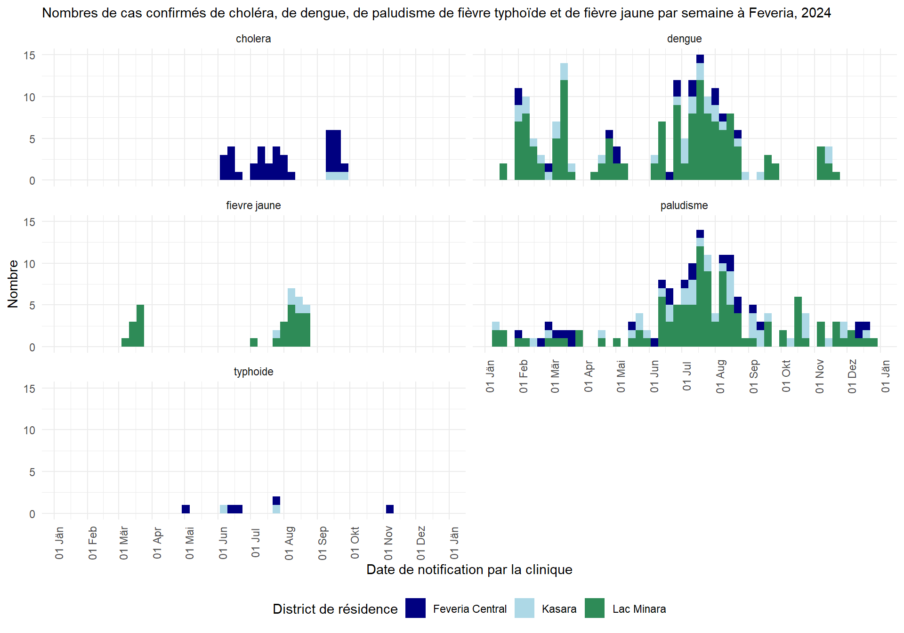

# Pour s'assurer que le package "pacman" est installé
if (!require("pacman")) {
install.packages("pacman") }
# Installation (si nécessaire) depuis le CRAN et chargement des packages à utiliser
pacman::p_load(
rio, # importation de données
skimr, # aperçu des données
janitor, # nettoyage des données et tableaux descriptifs
lubridate, # manipulation des dates
epikit, # pour créer des catégories d'âge
gtsummary, # statistiques descriptives, tests et régressions
apyramid, # tracé de pyramides des âges
flextable, # tableaux prêts à être présentés
naniar, # analyse des données manquantes
remotes, # pour installer le package permettant de télécharger les données
tidyverse # gestion et visualisation des données
)Jonction et analyse des données de notification et des données de laboratoire dans R
Pour savoir comment utiliser nos études de cas, consultez notre site web Guide Pratique. Nous vous invitons à nous faire part de vos commentaires et suggestions à l’adresse contact@appliedepi.org. Vous pouvez également discuter de l’étude de cas ou de sujets associés sur le Forum communautaire d’Applied Epi.
Scénario
Vous êtes un épidémiologiste travaillant au bureau national de surveillance de Feveria, un tout petit pays tropical. Le pays compte trois districts :
- Feveria Central: une zone urbaine surpeuplée, avec des infrastructures d’eau et d’assainissement parfois peu fiables.
- Lac Minara: une région lacustre dotée de bonnes infrastructures, mais avec une forte présence de moustiques pendant les mois les plus chauds de l’année.
- Kasara: une zone suburbaine de l’autre côté de Feveria Central.
Carte des districts du pays Feveria

Nous sommes en janvier 2025, et votre supérieure hiérarchique souhaite que vous transfériez le traitement de routine des données sur les maladies à déclaration obligatoire d’Excel à R, et d’effectuer quelques analyses sur ces données. Elle souhaite connaître au minimum:
- Combien de cas suspects des différentes maladies à déclaration obligatoire ont été signalés en 2024, et quelle était la plus représentée ?
- Parmi eux, quel était le pourcentage de cas confirmés ?
- Combien de cas confirmés des différentes maladies à déclaration obligatoire ont été signalés en 2024, et quelle était la plus représentée ?
- Comment se répartissaient géographiquement et temporellement les cas confirmés dans la région de Feveria ?
Elle vous demande d’écrire le code pour importer, nettoyer, joindre et analyser les listes linéaires suivantes :
- Données de surveillance 2024 des maladies à déclaration obligatoire : Appelées également “données de notification”, il s’agit de données de surveillance sur cinq maladies à déclaration obligatoire signalées par les cliniques de Feveria : la dengue, le paludisme, le choléra, la fièvre typhoïde et la fièvre jaune. Il s’agit de cas suspects, basés sur les symptômes des patients. Les cliniciens saisissent chaque notification dans un système en ligne tous les jours de la semaine.
- Données 2024 sur les résultats des tests de laboratoire : Ces données sont issues des résultats des tests de laboratoire effectués par trois grands laboratoires de Feveria. Ces résultats concernent des échantillons prélevés sur les cas suspects de maladies à déclaration obligatoire enregistrés dans la première base de données ci-dessus.
Allons-y !
Les objectifs
Dans cette étude de cas, vous allez :
- Utiliser des fonctions essentielles de R pour nettoyer des données, remodeler des bases de données, fusionner différentes sources de données et créer de nouvelles colonnes à l’aide de conditions logiques pour préparer les données pour l’analyse.
- Passer en revue les données et effectuer des contrôles de leur qualité à plusieurs étapes du projet et comprendre l’importance de ces actions pour une analyse fiable.
- Conduire des analyses descriptives de base pour comparer les tendances des maladies à partir de différentes sources de données, avant et après la jointure.
- Interpréter les différences de résultats selon les sources de données et comprendre comment elles reflètent la structure et la conception du système de surveillance dans son ensemble.
Étape 1. Mise en place
1.1 Démarrer dans RStudio
Commencez par la mise en place d’un flux de travail reproductible et bien organisé. Ce processus facilitera le renouvellement de votre analyse chaque fois que cela sera nécessaire.
Tâches :
- Création d’un un projet RStudio
- Création d’une structure claire de sous-dossiers dans lesquels vous placerez votre code, vos données et vos résultats / sorties.
- Création d’un script R, ou d’un fichier R Markdown si vous préférez. Assurez-vous que que le but du script, la date et l’auteur sont écrits sous forme de commentaires en haut du script.
- Additionnel : Assurez-vous que votre langue de travail dans RStudio est appropriée (par ex. le français pour cet exercice)
Cliquez pour lire un indice
Créez un dossier dans lequel vous placerez tous les travaux de cette étude de cas. Par exemple, créez un dossier “Analyse_multi_maladies” sur le bureau de votre ordinateur. Créez votre projet RStudio dans ce dossier.
Nous suggérons de créer les sous-dossiers suivants :
scripts(pour votre code),donnees(pour vos données), etresultats(pour vos résultats d’analyse).
1.2 Installer/charger des packages
Dans votre script R, vous devez maintenant installer et charger les packages R nécessaires. Cela permet de s’assurer que les fonctions nécessaires sont disponibles pour votre analyse.
Vous aurez besoin des packages suivants : {rio} (pour l’importation des données),{skimr} (pour l’examen des données), {janitor} (pour le nettoyage des données), {lubridate} (pour le nettoyage des dates), {epikit} (pour des tâches liées à l’épidémiologie), {gtsummary} (pour les statistiques descriptives / les tests et régressions), {apyramid} (pour les pyramides des âges et des sexes), {flextable} (pour des tableaux prêts à être présentés), {naniar} (pour l’analyse des données manquantes), et {tidyverse} (pour la manipulation générale des données et autres tâches scientifiques).
Vous aurez également besoin du package{remotes} pour télécharger les données - ce que nous expliquerons dans la section sur le téléchargement.
Alors que vous commencez, votre collègue expérimenté vous glisse : “J’ai entendu parler du package {pacman} pour facilement gérer l’instalation et le chargement des packages dans R”.
À vous de jouer !
Étape 2. Télécharger et importer les données
2.1 : Télécharger les données
Votre bureau vous fournit deux fichiers pour votre analyse, tous deux contenant des données pour 2024 et mises à jour au 15 janvier 2025 :
- un ensemble de données de notification des maladies (“multi_maladies_notifications.xlsx”) avec l’information sur les cas de 5 centres de santé.
- Un ensemble de données au niveau des tests de laboratoire (“multi_maladies_tests.csv”) soumis par trois laboratoires effectuant des tests pour les cinq centres de santé.
Pour cette étude de cas, vous pouvez télécharger les données via le répertoire de données d’Applied Epi, auquel vous pouvez accéder grâce au package {appliedepidata}. Suivez les étapes suivantes :
- Installez le package
{appliedepidata}depuis GitHub à l’aide de la fonctioninstall_github()du package{remotes}(que vous avez installé précédemment)
# Use the install_github function from remotes to install appliedepidata
remotes::install_github("appliedepi/appliedepidata")- Enregistrez les deux ensembles de données dans un dossier spécifique à l’aide de la fonction
save_data()de{appliedepidata}en exécutant le code ci-dessous. Dans l’exemple ci-dessous, les données sont enregistrées dans un sous-dossierdonneesdu dossier de projet RStudio. Notez que si vous ne spécifiez pas d’emplacement spécifique avec l’argumentpathde la fonction, une fenêtre s’ouvrira pour vous demander de sélectionner manuellement un dossier.
# Téléchargement des deux fichiers de données en utilisant la fonction save_data()de appliedepidata
appliedepidata::save_data("multi_maladies_tests",
path = "donnees")
appliedepidata::save_data("multi_maladies_notifications",
path = "donnees")2.2 Importer les données
Très bien ! Merci au bureau national et à Applied Epi ! Il est maintenant temps d’importer les données de ce dossier dans RStudio, afin de pouvoir les analyser.
Tâche A : Importer les deux fichiers de données téléchargés dans votre environnement R Studio
Idéalement, vous utiliserez la même fonction pour importer les deux ensembles de données, bien qu’un soit un fichier .csv et l’autre un fichier .xlsx. Notez qu’à l’avenir, nous dirons simplement “environnement” lorsque nous parlerons de la fenêtre environnement dans R Studio.
Cliquez pour lire un indice
Utiliser la fonction import du package {rio}, qui peut reconnaître et importer différents types de fichiers. Elle remplace les fonctions d’importation qui sont spécifiques à un type de fichier, telles que read.csv() de {base} pour les fichiers .csv et read_excel() de {readxl} pour importer des fichiers .xlsx.
Pour en savoir plus sur les fonctions d’importation, lisez le chapitre Importer et exporter des données du Epi R Handbook.
Étape 3. Inspecter les données
Les données sont là, il est maintenant temps de voir ce qu’elles racontent. Jetez un premier coup d’oeil à vos deux ensembles de données brutes pour en vérifier le contenu et la qualité.
Étape 3.1 Inspecter les données de surveillance
Tâche A : Inspecter tout d’abord les dimensions et le contenu global des données de notification
Utilisez skim() du package {skimr} package, ainsi que names(), ncol() et nrow() pour inspecter votre ensemble de données.
skim() vous donne de nombreuses informations sur la structure et le contenu des données, et names() vous fournira les différents noms de colonnes des données. Les fonctions ncol() et nrow() renvoient le nombre de colonnes ou de lignes dans les données. Savez-vous ce qu’il faut mettre entre les parenthèses ?
Le plus simple est de regarder dans l’environnement. Rappelez-vous que l’objet de votre environnement contenant les données de notification s’appelle data_notif_brut.
Cliquez sur la solution sous l’encart de questions si vous avez besoin d’aide.
Tâche B : Examinez ensuite les classes des colonnes de votre ensemble de données de notification brut
Utilisez skim() du package {skimr} ou class() pour explorer les classes des colonnes.
Vous souvenez-vous de la façon de spécifier la colonne qui vous intéresse à l’intérieur de la fonction class() ? Vous pouvez également explorer les classes depuis l’environnement.
Tâche C : Inspecter les valeurs catégorielles et les données manquantes
Utiliser la fonction tabyl() pour inspecter les valeurs dans les colonnes qualitatives/catégorielles en spécifiant le nom de la base de données comme premier argument, et le nom de la colonne comme second argument.
Par exemple, ce code renvoie le contenu de la colonne Sexe. La sortie montre que masculin et féminin sont sont orthographiés de manière incohérente dans les données. Cette colonne devra faire l’objet d’un nettoyage avant de pouvoir être analysée.
tabyl(data_notif_brut, Sexe) Sexe n percent valid_percent
F 47 0.04761905 0.05452436
FEMININ 146 0.14792300 0.16937355
M 40 0.04052685 0.04640371
MASCULIN 172 0.17426545 0.19953596
f 154 0.15602837 0.17865429
feminin 98 0.09929078 0.11368910
m 119 0.12056738 0.13805104
masculin 86 0.08713273 0.09976798
<NA> 125 0.12664640 NAPour analyser les données manquantes, vous pouvez utiliser la fonction miss_var_summary() du package {naniar} :
miss_var_summary(data_notif_brut)# A tibble: 12 × 3
variable n_miss pct_miss
<chr> <int> <num>
1 Date d'apparition 691 70.0
2 Enceinte 510 51.7
3 Resultat 197 20.0
4 Date du resultat 197 20.0
5 Date de naissance 168 17.0
6 Sexe 125 12.7
7 Nom de l'unite d'organisation 0 0
8 Code de l'etablissement de sante 0 0
9 ID de notification 0 0
10 District residentiel 0 0
11 Maladie notifiee 0 0
12 Date signalee par l'etablissement de sante/la communaute 0 0 Étape 3.2 Inspecter les données de laboratoire
Tâche A : Inspecter les dimensions et le contenu global des données de laboratoire
Comme pour les données de surveillance, utilisez skim(), ncol() et nrow()ou inspecter l’environnement pour inspecter les données de laboratoire.
Tâche B : Examiner les classes, les valeurs catégorielles et les données manquantes
Comme ci-dessus, utilisez les fonctionc class(), skim() ou tabyl(), ou explorer l’environnement, pour examiner vos colonnes en détail.
Étape 4. Nettoyer et décrire les données de notification
Vous savez maintenant que les données de notification (data_notif_brut) contiennent des des informations sur les cas suspects, ainsi que des données démographiques de base (âge, sexe, grossesse, district de résidence), et des informations sur la date d’apparition des symptômes, la date de notification par l’établissement de santé, et l’issue. Certaines colonnes doivent être nettoyées avant de poursuivre l’analyse, en raison des variations dans l’orthographe des valeurs catégorielles et de certaines colonnes non reconnues comme des dates.
Vous allez maintenant commencer à écrire de plus longs morceaux de code pour nettoyer les données, à l’aide de plusieurs fonctions {dplyr} reliées à l’aide d’opérateurs “pipe” (qui ressemblent à ceci : |>).
NOTE SUR LES ‘PIPES’ : Les “pipes” vous permettent d’effectuer plusieurs opérations en une seule commande fluide, en “enchaînant” différentes fonctions. La sortie d’une fonction devient l’entrée de la suivante. Si vous avez besoin de plus d’informations sur les pipes, veuillez vous référer au chapitre du Epi R Handbook.
Notez que cet exercice utilise le pipe de base (|>) plutôt que le pipe magrittr (%>%), car il est plus rapide et ne nécessite pas l’installation de packages. Utilisez le pipe magrittr si vous préférez.
Étape 4.1 Nettoyer les données
Tâche A : Nettoyez les noms de colonnes et sélectionnez les colonnes à analyser
Pour des raisons de qualité et de stockage des données, votre équipe vous recommande de créer une liste linéaire propre qui ne contienne que des informations sur l’identifiant unique, la localisation du cas, la maladie et la date de notification au système de surveillance.
Écrivez une commande R pour produire une nouvelle base de données propre appelée data_notif, en appliquant les étapes de nettoyage suivantes:
- Renommer les colonnes pour qu’elles soient plus facilement lisibles par la machine (supprimer les espaces et les majuscules) en utilisant
clean_names()du package{janitor}. - Utiliser la fonction
rename()de{dplyr}pour que:- le nom de la colonne avec la date à laquelle le cas a été signalé soit remplacé par un nom plus concis
date_notif. - le nom de la colonne d’identifiant de la notification soit plus concis (
id_notification).
- le nom de la colonne avec la date à laquelle le cas a été signalé soit remplacé par un nom plus concis
- Sélectionnez les colonnes pertinentes pour l’analyse à l’aide de la fonction
select()du package{dplyr}.
Cliquez pour lire un indice
Commencez votre code par le nom du nouvel ensemble de données, l’opérateur d’assignation et le nom de l’objet contenant les données brutes. Ainsi le résultat du traitement des données brutes sera assigné à un nouvel objet appelé data_notif.
data_notif <- data_notif_brutIl faudra ensuite construire la commande de nettoyage en ajoutant des fonctions supplémentaires, liées à l’aide d’un pipe. Cela vous permet d’effectuer plusieurs opérations en une seule commande fluide. Tout d’abord, vous utiliserez clean_names() pour normaliser tous les noms de colonnes. Il remplace automatiquement les espaces et les caractères spéciaux par des traits de soulignement (underscore), supprime les accents et les apostrophes, et convertit tous les caractères en minuscules, ce qui rend les noms de colonnes plus facile à utiliser. Vous pouvez ensuite utiliser rename() pour donner à une colonne un nouveau nom. Rappelez-vous que lorsque vous utilisez rename(), la colonne aura déjà reçu le nom issu de clean_names().
data_notif <- data_notif_brut |>
clean_names() |>
rename(NOUVEAU_NOM = ANCIEN_NOM) |>
select(VAR_NAMES)Tâche B : Normaliser les valeurs catégorielles
Vous savez déjà, grâce à l’inspection des données, que les valeurs de district ne sont pas normalisées.
Ajouter un mutate() pour nettoyer la colonne district_residentiel, afin de:
- Normaliser l’utilisation d’écriture minuscule / majuscule dans la colonne
- Remplacer la colonne
district_residentielexistante par une colonne qui ne contient que les valeurs pour les districts : “Lac Minara”, “Feveria Central” et “Kasara”.
Consultez l’indice pour savoir quelles fonctions vous pourriez utiliser.
Cliquez pour lire un indice
Essayez d’utiliser str_to_title() du package {stringr} de façon à ce que la première lettre de chaque mot soit en majuscule et que toutes les autres lettres soient en minuscule. Vous pouvez également utiliser case_match() pour spécifier différentes fautes de frappe spécifiques. Comme pour l’utilisation de rename() après clean_names(), prenez en compte que la fonction str_to_title() a modifié les valeurs des données fournies à la fonctioncase_match().
Utilisez le panneau d’aide (“Help”) de RStudio pour savoir comment utiliser ces fonctions. Par exemple, tapez ?case_match dans votre console pour obtenir la page d’aide. NOTE sur case_match() : il s’agit d’une fonction très utile pour remplacer ou corriger des valeurs, qui remplace la fonction recode().
Tâche C : Gérer les dates
La colonne de la date de notification doit être transformée de manière à ce qu’elle soit reconnue comme une date dans R. Cela vous permettra d’analyser les tendances au fil du temps, y compris en utilisant un décompte par semaine ou par mois.
Examinez les valeurs de la colonne date_notif. Ajoutez ensuite une ligne à votre code de nettoyage pour modifier date_notif en une classe de date.
Connaître le format de date d’origine vous permettra d’utiliser la bonne fonction pour convertir la colonne en classe de date. Nous vous recommandons d’utiliser l’une des fonctions du package {lubridate} : soit ymd() (pour convertir les dates écrites sous la forme année-mois-jour), mdy() (pour les dates mois-jour-année), ou dmy() (pour les dates jour-mois-année). Ces fonctions reconnaîtront n’importe quelle façon d’écrire la date, à condition qu’elle soit organisée dans cet ordre. Par exemple “21 août 2025” (oui! oui! même en français) et “21-08-2024” seraient toutes deux reconnues par dmy().
Tâche D : Rechercher les doublons
Vos collègues vous disent que chaque id_notification représente un cas suspect unique. Vous souhaitez maintenant créer une table pour vérifier s’il existe des doublons de id_notification sur plusieurs lignes de vos données.
Cliquez pour lire un indice
Il existe de nombreuses façons de procéder, mais essayez d’utiliser la fonction count() de {dplyr}. Elle créera un tableau qui comptera le nombre de lignes par valeur unique de la colonne que vous spécifiez dans la fonction. Ensuite, utiliser tabyl() pour examiner la distribution de ces effectifs.
Étape 4.2 Analyse descriptive simple
Vous pouvez maintenant procéder à une analyse descriptive des cas, puisque vos données sont propres et que vous savez qu’une ligne équivaut à un cas. Utilisez la fonction tabyl() pour réaliser les tâches suivantes.
Tâche A : Compter le nombre de cas suspects de chaque maladie diagnostiquée à Feveria en 2024
Tâche B : Compter le nombre de cas suspects par maladie et par district de résidence
Utilisez tabyl() pour croiser les colonnes maladie et district de résidence.
Complétez votre tableau en ajoutant diverses fonctions adorn du package {janitor}, pour afficher la distribution en pourcentage. Par exemple adorn_percentages(), adorn_pct_formatting() et adorn_ns().
Tapez le nom de la fonction après un ? dans votre console (par ex. ?adorn_ns) pour afficher les pages d’aide correspondantes. Vous pouvez également consulter la section à propos de {janitor} dans le Epi R Handbook pour plus d’explications sur les fonctions adorn_xxx().
Cliquez pour lire un indice
Voici du code pour vous aider à démarrer. Il croise maladie_notifiee et district_residentiel avec tabyl(), puis en ajoutant adorn_percentages() convertit ces nombres en proportions avec de nombreuses décimales. Vous devrez ensuite rajouter adorn_pct_formatting() avec un autre pipe, pour convertir les proportions en pourcentages, et enfin adorn_ns() pour ajouter à nouveau les effectifs entre parenthèses. Notez que les fonctions adorn_xxx() doivent être appliquées dans un ordre spécifique !
tabyl(data_notif, maladie_notifiee, district_residentiel) |>
adorn_percentages()Pour les facteurs contribuant à l’augmentation des maladies diarrhéiques, revenez au début de l’étude de cas, à la partie présentant les districts!
Étape 5. Nettoyer, consolider et décrire les données de laboratoire
Le travail effectué à l’étape 3 vous a permis de constater que les données de laboratoire ne contiennent que des données sur les tests et aucune information sur les patients. Les données sont déjà très propres, nous n’avons à standardiser qu’une seule colonne. Nous voudrons également traiter l’ensemble de données du laboratoire de manière à ce qu’il y ait une ligne par notification, afin de pouvoir le lier proprement à l’ensemble de données de notification.
Étape 5.1 Normaliser les résultats des tests
Tâche A : Convertissez toute valeur contenant “P” en “Positif”, “N” en “Négatif” et “I” en “Indéterminé”.
Créez un nouvel objet data_lab. Cela permettra une analyse et une interprétation des résultats plus simples.
Étape 5.2 Consolidation pour obtenir une ligne par test
Tâche A : Idenfier le nombre d’échantillons à lignes multiples
Nous savons déjà que certains échantillons se retrouvent sur plusieurs lignes, et que c’est dû au test de la dengue qui a trois cibles, avec une ligne par pour le résultat de chaque cible.
Maintenant, trouvez le nombre d’échantillons présentant plusieurs lignes.
Procédez de la même manière que pour les données de notification, en utilisant l’objet data_lab: comptez d’abord le nombre de lignes par échantillon, puis créer un tableau montrant la distribution des nombres de lignes. Il faut garder à l’esprit que que chaque échantillon est identifié par un id_echantillon.
Tâche B : Consolider pour obtenir une ligne par id_echantillon, en donnant la priorité aux résultats positifs
Comme vous l’avez vu dans la section 3.2, votre test de dengue fournit des résultats pour trois cibles biologiques différentes : IgG, IgM et NS.1. Les résultats pour chacune de ces cibles peuvent être soit négatifs, soit positifs. Cependant, pour simplifier et consolider vos données, vous souhaitez attribuer une seule valeur “Négatif” ou “Positif” à chaque échantillon, pour indiquer si l’échantillon révélait une infection en cours.
cible | Négatif | Positif |
|---|---|---|
Dengue IgG | 110 | 105 |
Dengue IgM | 105 | 110 |
Dengue NS.1 | 139 | 76 |
Votre collègue Ben, qui travaille au laboratoire, vous conseille ce qui suit :
- Un échantillon peut être considéré comme positif si le NS.1 ou les IgM sont positifs (les deux pouvant représenter une infection aiguë).
- Vous pouvez ignorer les IgG (parce qu’un résultat positif en l’absence de NS.1 ou d’IgM positifs indique une immunité après une infection passée résolue).
Vous devez maintenant consolider les résultats du test de la dengue en une ligne par test, avec une valeur unique de résultat. Utiliser filter(), arrange() et slice(), en veillant à ce que tout échantillon positif pour NS.1 ou IgM soit considéré comme positif pour la dengue. Créez un nouvel objet appelé data_lab_tests
Cliquez pour lire un indice
Essayez d’appliquer ce qui suit pour consolider selon la recommandation de Ben :
- Supprimer les résultats IgG : filtrez les lignes où la cible est “IgG” à l’aide de
filter()de{dplyr}. - Donner la priorité aux résultats positifs pour les IgM/NS1 : Regroupez par
id_echantillonet réorganisez les lignes avecarrange()afin que tout résultat “Positif” apparaisse en premier. - Filtrer pour obtenir le résultat final : Ne conservez que la première ligne de chaque groupe en utilisant
slice(1)pour obtenir le résultat global positif ou négatif de l’échantillon.
Tâche C : Dédupliquer à une ligne par id_notification, en priorisant les résultats positifs.
Maintenant, vérifiez le nombre de tests par identifiant de notification dans vos nouvelles données consolidées.
Vous pouvez voir qu’il y a 26 lignes avec le même id_notification, mais seulement parmi les cas testés par microscopie du sang total pour le paludisme.
data_lab_tests |>
count(test, id_notification) |>
tabyl(test, n) test 1 2
Culture de selles 45 0
Dengue NS1/IgG/IgM 215 0
Hemoculture 33 0
IgM ELISA 88 0
Microscopie du sang total 451 26Vous poursuivez vos recherches en examinant un exemple de cas avec le id_notification “043228”. Cela vous apprend que ce cas a été testé deux fois, avec deux échantillons différents, à une semaine d’intervalle. Le premier résultat était positif, et le second résultat était négatif.
data_lab_tests |>
filter(id_notification == "043228")# A tibble: 2 × 7
nom_laboratoire id_notification id_echantillon date_test test cible valeur
<chr> <chr> <chr> <IDate> <chr> <chr> <chr>
1 Hopital universi… 043228 27c37cd8 2024-06-18 Micr… Plas… Posit…
2 Hopital universi… 043228 d2271be0 2024-06-25 Micr… Plas… Négat…Si vous avez répondu que vous devez dédupliquer, vous avez raison !
Dédupliquez vos données afin d’avoir une ligne par id_notification, en priorisant les résultats positifs, afin de pouvoir établir un lien avec les données de notification.
Pour ce faire, suivez un processus similaire à celui de la tâche B, en utilisant la base de données produite par la tâche B :
- Regrouper par
id_notification - Classer par valeur du résultat du test de manière à ce que les valeurs commençant par P soient listées dans la première ligne, suivies des N (Négatif), puis des I (Indéterminé).
- Conservez ensuite la première ligne de chaque groupe de
id_notificationen utilisantslice(). - Pour finir, assignez le résultat à un nouvel objet appelé
data_lab_cas.
Étape 5.3 Analyse descriptive simple
Nous disposons maintenant de deux objets que nous pouvons utiliser pour l’analyse des données de laboratoire : data_lab_tests et data_lab_cas.
Tâche A : Compter le nombre de tests spécifiques à une maladie, de résultats positifs et de résultats négatifs dans les données de laboratoire de 2024.
Tâche B : Compter le nombre de cas suspects testés dans les données de 2024
Étape 6. Jonction et traitement final
Maintenant que les deux listes linéaires sont nettoyées et qu’elles comportent une ligne par cas suspect, vous pouvez les joindre pour permettre l’analyse complète demandée par votre patron.
Étape 6.1 Joindre les données de notification et les données de laboratoire
Tâche A : Effectuer la jointure
Créer un nouvel objet appelé data_jointes en utilisant une fonction xxx_join() de {dplyr}. Vous souhaitez conserver toutes les notifications, mais ajouter les résultats de tests lorsqu’ils sont disponibles pour chaque cas suspect.
Tâche B : Vérifier que la jointure a fonctionné comme prévu
Vérifiez maintenant vos données et examinez quelques points.
Étape 6.2 Étiqueter les cas confirmés, écartés et suspects
Tâche A : Créer une dernière colonne de “catégorie de cas”.
Utiliser mutate() pour créer une nouvelle colonne cas_categorie, afin de mettre à jour le status de cas suspect en fonction de leurs résultats de laboratoire. Les catégories devraient être les suivantes :
- Si le résultat est positif : Confirmé
- Si le résultat est négatif : Ecarté
- Si le résultat est indéterminé ou manquant : Suspect
Cela signifie que tous les cas figurant dans les données de notification sont d’abord “Suspect” lorsqu’ils sont déclarés, puis restent “Suspect” en l’absence d’un résultat de test concluant.
Étape 6.3 Examiner la distribution des résultats de laboratoire entre les cas
Tâche A : Utiliser tabyl() pour établir un tableau des catégories de cas
Utilisez tabyl() directement, et aussi en croisant avec les maladies pour répondre aux questions ci-dessous.
Tâche B : Évaluer le pourcentage de cas suspects qui sont effectivement des cas réels
Utilisez tabyl() à nouveau, en examinant les résultats par maladie. Réfléchissez au dénominateur adéquat !
Cliquez pour lire un indice
Diviser le nombre de cas confirmés (c’est-à-dire ceux dont le résultat est positif) par le nombre de cas confirmés plus les cas écartés (c’est-à-dire ceux dont le résultat est soit positif, soit négatif). On obtient ainsi un taux de positivité, qui correspond approximativement au pourcentage de cas suspects qui étaient réellement des cas. Les résultats indéterminés sont exclus du dénominateur car ils ne fournissent pas de résultat clair et fausseraient le taux de positivité.
Étape 6.4 Création d’une liste linéaire contenant uniquement les cas confirmés
Tâche A : Créer une nouvelle liste linéaire appelée data_jointes_confirme.
C’est ce que vous utiliserez dans les rapports de surveillance officiels.
Étape 7. Analyse descriptive des cas confirmés
Maintenant que vous disposez de la liste des cas confirmés de maladies à déclaration obligatoire signalés à Feveria en 2024, vous êtes prêt à effectuer la dernière partie de votre analyse de surveillance ! Il s’agit de décrire les cinq maladies à déclaration obligatoire par zone géographique et par période.
Conseil: L’analyse des données de surveillance comprend généralement une analyse par personne. Vous pourriez développer cette étude de cas en procédant à une analyse selon les variables démographiques.
Étape 7.1 Décrire les cas par district
Tâche A : Produire un tableau des cas confirmés par district à l’aide des fonctions tabyl() et adorn_xxx(), incluant les totaux
Étape 7.2 Décrire les cas au cours le temps
Vous allez travailler à la réalisation de cette courbe épidémique, à travers les tâches ci-dessous.

Tâche A : Commencez par utiliser ggplot() et geom_histogram() pour produire une courbe épidémique globale pour Feveria, montrant le nombre de cas par semaine de notification, avec des barres empilées et colorées par maladie.
Veillez à spécifier l’argument binwidth=7 afin que chaque barre de l’histogramme représente le nombre de cas sur une période de 7 jours.
Tâche B : Utiliser ggplot() pour produire une courbe épidémique montrant le nombre de cas par semaine de rapport, stratifiée / facettée (et non empilée) par maladie.
Utilisez facet_wrap() pour créer facilement plusieurs mini-graphiques, un par maladie. Pour en savoir plus, vous pouvez consulter le chapitre sur les facettes avec ggplot2 du Epi R Handbook
Tâche C : Ajoutez maintenant une couleur de remplissage à votre graphique à facettes selon le district de résidence afin d’avoir des barres empilées colorées par district.
Tâche D : Améliorer l’apparence et le formatage de votre graphique à facettes pour qu’il soit prêt à être publié.
Vous pouvez ajouter, préciser ou modifier :
- Le thème/l’apparence de l’ensemble du graphique (par exemple, la couleur d’arrière-plan ou l’apparence des lignes de la grille)
- Le titre, sous-titre… et les étiquettes des axes
- Les couleurs des barres (avec
scale_fill_manual()) - Le formatage et l’espacement des dates le long de l’axe des x (avec
scale_x_date) - Beaucoup d’autres choses !
Tâche E : Produire un tableau résumant des dates clés
Cette fois, utilisez group_by() et summarize() pour produire un tableau par district indiquant les dates de notifications les plus anciennes et les plus récentes.
A l’aide d’une fontion filter(), vous pourrez générer ce tableau pour un district à la fois.
Conclusion
Superbe ! Conformément aux objectifs de cette étude de cas, vous avez fait ce qui suit :
Vous avez utilisé des fonctions clés de R pour nettoyer, remodeler et joindre des ensembles de données, et vous avez créé de nouvelles colonnes à l’aide de conditions logiques.
Pour obtenir des informations sur le traitement des données, vous avez procédé à des analyses exploratoires et à des vérifications des données tout au long du processus.
Vous avez effectué une analyse descriptive approfondie pour comprendre les données de laboratoire et de notification, avant et après la jointure. En réponse aux quatre questions initiales de votre superviseur, vous pouvez dire :
- Combien de cas suspects des différentes maladies à déclaration obligatoire ont été signalés en 2024, et lesquels étaient les plus fréquents ? Le paludisme était la maladie à déclaration obligatoire la plus courante à Feveria en 2024. Selon le système de surveillance des maladies à déclaration obligatoire : Il y a eu 533 cas suspects de paludisme, 273 cas suspects de dengue, 100 cas de fièvre jaune, 46 cas de choléra et 35 cas de typhoïde.
- Quel pourcentage de ces cas a été confirmé ? Près de 80 % des cas à déclaration obligatoire signalés en 2024 avaient donné lieu à un résultat de test de laboratoire au moment de la jointure des données, avec quelques variations selon les maladies. Au total, 56 % des cas notifiés ont finalement été confirmés, mais ce pourcentage variait de 23 % seulement pour la fièvre typhoïde (7 cas confirmés sur 31 cas suspects avec résultats de tests) à 95 % pour le choléra (38 cas confirmés sur 40 cas suspects avec résultats de tests). En outre, le taux de positivité était plus élevé pour les cas présumés de dengue que pour les cas présumés de paludisme (87 % contre 41 %).
- Combien de cas confirmés de différentes maladies à déclaration obligatoire ont été signalés en 2024, et laquelle était la plus fréquente ? Les cas confirmés ont suivi une tendance légèrement différente de celle des cas suspects : l’infection la plus fréquemment signalée était la dengue avec 186 cas, suivie du paludisme (174), puis du choléra (38), de la fièvre jaune (33) et de la fièvre typhoïde (7).
- Comment les cas confirmés se répartissent-ils géographiquement et temporellement dans la région de Feveria ? Feveria a connu une transmission de la dengue et du paludisme tout au long de l’année, avec un pic en été, et concentrée dans le district de Lac Minara. Feveria a également connu de petites et rares épidémies de maladies diarrhéiques, telles que le choléra et la fièvre typhoïde, en particulier dans la zone urbaine de Feveria Central, où l’eau et l’assainissement peuvent poser problème.
Enfin, vous avez pu réfléchir à la manière dont les processus des systèmes de surveillance des maladies à déclaration obligatoire et ceux des tests de diagnostique de laboratoire, par exemple le transfert des données entre les cliniques et les laboratoires, peuvent affecter la qualité et l’exhaustivité des données, et donc vos résultats.
Il reste encore beaucoup de possibilités. Vous pouvez explorer les distributions des maladies par âge ou par sexe, calculer des taux d’incidence ou de prévalence des maladies à l’aide de données démographiques et même analyser les délais de déclaration en examinant les différentes dates de vos ensembles de données.
Vous avez acquis de solides bases et vous êtes bien équipé pour passer à l’étape suivante de votre analyse. Continuez, des découvertes passionnantes vous attendent !
Pour en savoir plus, consultez les autres études de cas ou plongez dans le Epi R Handbook.
Code de nettoyage et d’analyse des données
Vous trouverez ci-dessous un script de toutes les étapes de nettoyage des données et des analyses descriptives. Notez que les analyses sont combinées à la fin plutôt qu’intercalées entre les étapes de nettoyage. Il s’agit d’une façon plus ordonnée d’organiser votre script.
Par souci de concision, le code ci-dessous n’inclut pas toutes les inspections et vérifications effectuées en cours de route, mais vous pouvez décider de créer des sections avec de telles vérifications.
Le début de votre script doit également contenir des informations pour aider le lecteur à comprendre à quoi sert le script, ainsi que des commentaires tout au long du script. Vous vous remercierez plus tard d’avoir ajouté ces commentaires !
Informations sur l’étude de cas
| Date | Modifications apportées | Version | Auteur |
|---|---|---|---|
| Juillet 2025 | Première version | 1 | Paula Blomquist et Alanah Jansen, Applied Epi, avec le soutien technique du CDC Global Surveillance, Laboratory, and Data Systems Branch en collaboration avec TEPHINET. |
| Août 2025 | Traduction française | 1 | Laurent LeHot et Olivia Boyd |
Conditions d’utilisation
Clause de non-responsabilité Les informations présentées dans cet exercice et les fichiers de données associés ont été développés pour aider les apprenants à atteindre les objectifs d’apprentissage prévus. Le contenu est celui de l’auteur ou des auteurs et ne représente pas nécessairement les opinions officielles du CDC, du US Department of Health and Human Services ou de TEPHINET.
Licence d’utilisation Licence : Cette étude de cas est sous licence licence CC BY-NC-SA 4.0. Pour plus d’informations sur le partage et l’adaptation de cette étude de cas, voir le certificat associé.
Financement Cette étude de cas a été soutenue à 100 % par l’accord de coopération numéro NU2HGH000044 financé par le US Centers for Disease Control and Prevention (CDC)